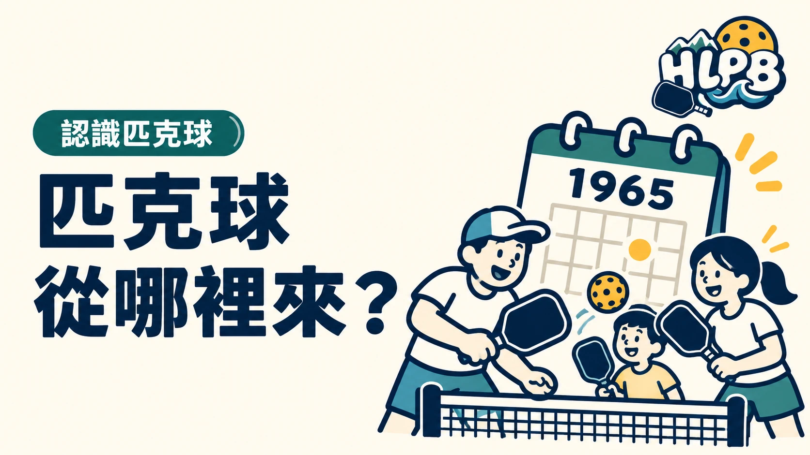

匹克球起源於 1965 年夏天的美國華盛頓州班布里奇島（Bainbridge Island）。USA Pickleball 將 Joel Pritchard、Bill Bell 與 Barney McCallum 列為創辦者。起初，他們只是想讓無聊的孩子有遊戲可玩。
這個故事最有趣的地方，是一項運動可以從「一起找點樂子」開始。對第一次接觸的花蓮球友，也可以先認識玩法，再找適合的體驗機會。
最後查證：2026-10-03｜資料來源：USA Pickleball：What Is Pickleball?
返回文章列表